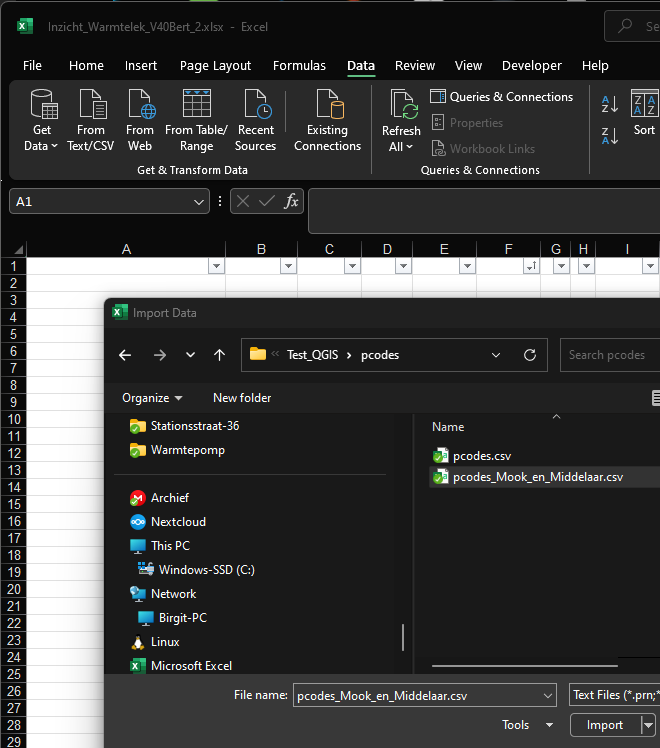
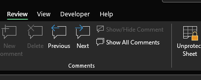
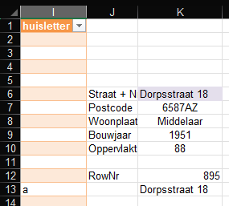

Het BAG register bevat het bouwjaar en het gebruikersoppervlakte van iedere woning. Het is de bedoeling dat je een klein deel van dit BAG register, namelijk een beperkte set gegevens van je eigen woonplaats of woonwijk(-en) in het rekenblad laadt.
Het BAG bestand kan op twee manieren worden verkregen
1. Vanaf de site van het kadaster met het programma QGIS
2. Vanaf de site van Bert Hubert, download: https://berthub.eu/bagconv/pcodes.zip
Methode 1. is een ware crime, terwijl methode 2. (met dank aan Bert die speciaal voor ons enkele wijzigingen heeft aangebracht) een simpel en helder proces is. Op Bert zijn site zijn nog andere methoden, die mogelijk interessant kunnen zijn voor de gevorderde gebruiker, zie beschrijving: https://berthub.eu/articles/posts/dutch-postcode-and-building-database/
Als je af en toe een woning in een andere gemeente doet, is het niet nodig die gemeente ook te laden, immers het handmatig opzoeken van deze 2 gegevens en in te vullen in het basis tabblad kost geen moeite.


Knop: From Text/CSV

selecteer het juiste bestand
gebruik nu "Load To" en niet "Load"
kontroleer door in A6 een geldige straatnaam en nummer in te vullen